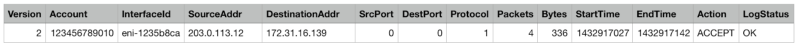
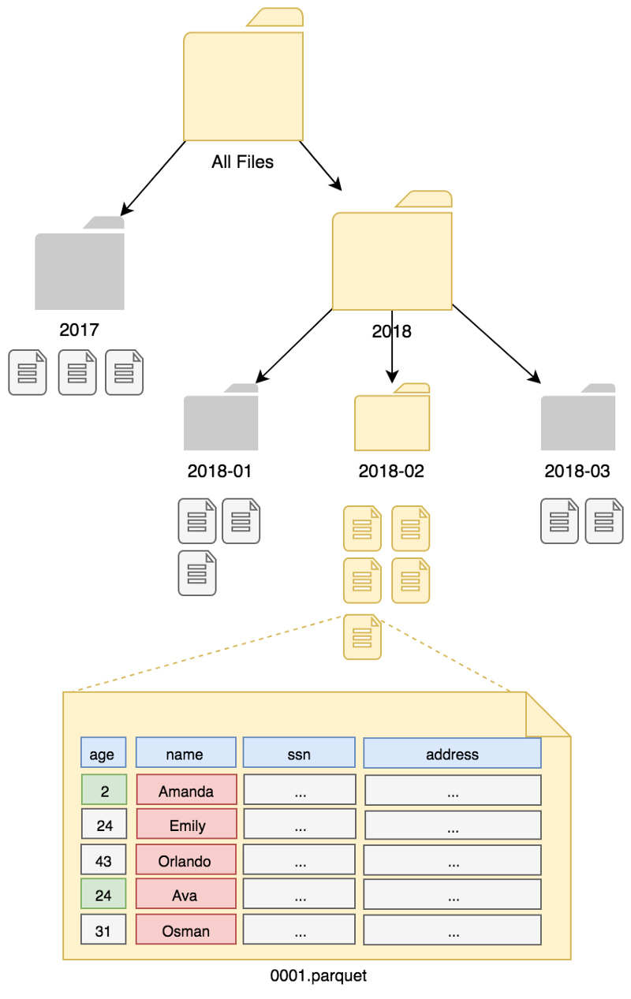
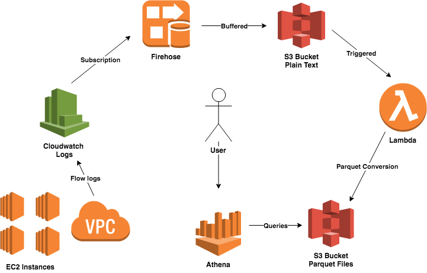

Analyzing AWS VPC Flow Logs using Apache Parquet Files and Amazon Athena
Originally appeared on Opsgenie Engineering Blog
Network security is an essential topic for companies, as a compromised network is a direct threat to both users and the applications. The easiest way to maintain security is just blocking the unauthorized activity or only allowing the predetermined traffic. For instance, if you have an Elasticsearch cluster, there is no need to open ports other than 9200 and 9300 to your applications. However, as the number of components increase and the requirements of your software stack pile up, it becomes harder to allow the permissions correctly. This causes misconfigurations that can allow unintended access into your network.
Proper monitoring is critical even for a simple web application to ensure the availability and reliability of your system. It is like unit testing, but from a different perspective. Most people monitor the CPU utilization, active connections, request counts by status codes, individual errors and act upon them. It is also easy to monitor the network activity. All your network activity is a sequence of various types of packets, such as TCP, UDP, ICMP packets traveling through the internet. Each packet has a source address, destination address, and depending on protocols; they have source and destination ports. So, if you can count how many packets and bytes are sent to each host, you would obtain a pretty useful information which is called a network flow. If a backend server is connecting to an address you do not expect, you may assume your application is compromised.
There are different ways of collecting network flow statistics. Standard protocols such as Netflow, SFlow, and IPFix allow collecting network flow information from servers, network switches and routers. However, if you are an Amazon Web Services user, your VPC (Virtual Private Cloud) logs are exported to Cloudwatch in the following format:

Each flow gives you enough information about the network activity since you can collect all of the exchanged information metadata. Compared to the standard flow formats, there is also an Action field, which indicates whether the packet is allowed or dropped. Dropping a packet occurs due to the security group rules or network ACL rules of the VPC. Dropped packets can notify you of the bots that are surveying the internet, or an internal service that is trying to connect to a wrong server, or even worse, an attacker inside your subnet trying to find a hole by brute forcing passwords. Besides the network security concerns, you can also see the most communicating hosts and plan better deployment strategies, divide servers or services to similar pieces. You can even use placement groups for close proximities.
Alternatives for analysing VPC logs
As there are loads of information sitting on VPC Flow logs, it would be very logical to be able to query them. However, all you can do is search as they sit in CloudWatch. If you want to aggregate or run advanced queries, you have to export them to somewhere suitable.
ElasticSearch is one of the easiest ways to query, but it is not great for ad-hoc analysis as writing aggregation queries is hard. You might want to import them to a relational database, however, if your network consists of a large number of endpoints, you will probably have billions of flows, and it might not scale well. You might go for a serverless solution, as mentioned in this AWS Blog Post, and export these logs to S3, and use Amazon Athena, a managed Presto service, that can query files in S3 with SQL. Since Amazon Athena is a managed service, you only pay for the scanned data for each query, and it is currently 5$ per TB of data.
The blog post describes attaching Firehose to Cloudwatch Log Group of the VPC flow logs, but it saves the data in compressed text format, which is not very cost efficient as it requires reading all of the data. The blog post also hints to use partitioning. Partitioning helps to reduce the number of files to be queried. However, even with partitioning the data, files still need to be decompressed and parsed by regular expressions so that it can be converted to the columns. This process still takes a lot of time, since reading-parsing is done each time you want to query. Another recommendation is on using columnar file formats such as Apache Parquet, but no detail is given.
Most blog posts urge you to use Spark since it supports Parquet, but using Spark even with Amazon EMR is a hassle and not required for a simple conversion like this. In the following part, we will describe how you can use plain Java to convert some texts to nicely formatted Parquet files. But first, you need to understand how do columnar files work, and how you can benefit from them.
Columnar Files and Apache Parquet
Columnar files gained popularity with big data systems. Compared to regular text-based formats, they are binary formats which can be parsed systemically and faster. For instance, a CSV file consists of many lines, each line corresponding to a row. Within each line, many attributes, i.e., columns, persist, such as name, age, etc. If you would like to get the average age of all the data, you need to read each line, extract the age column, parse it into an integer, and calculate the average. You probably used a very tiny portion of the file. However, you have read all of the data. This whole process is highly inefficient, slow, and can cost you a lot.
On the other hand, columnar formats allow partial reading of the file, so that only requested columns are fetched. The file is organized as columns instead of rows. Also, files have metadata at the beginning, specifying the location of each column in the file, so you can directly jump to the relevant byte of the data and skip the unrelated ones. Some columnar files’ metadata also has more information, such as range of the values, or some data structures like bloom filters that can help filter out the data without even reading it. For example, if a file consists of ages between 25–30 and your query is asking for the average salary of people who are older than 40, only metadata is read and skipped. As you can imagine, this filtering can speed up queries significantly. However, one disadvantage is that columnar files are often non-extendable, meaning you cannot add new data without constructing a completely new file. To simply put it, they are immutable.
Apache Parquet is an open source columnar & compressed file system in the Hadoop ecosystem, which is supported by many tools. It is based on record shredding and assembly algorithm described in Google’s famous research paper, Dremel: Interactive Analysis of Web-Scale Datasets. This paper is also the foundation for the Apache Drill, a query engine and Google’s managed BigQuery service. Compared to other columnar formats that are flattening the data, it is also efficient for nested data.
Apache Parquet supports GZIP, SNAPPY, LZO, ZLIB compressions. SNAPPY allows fast compression-decompression, but GZIP allows higher compression ratios. LZO is also another alternative that is focused on rapid decompressions, while ZLIB has higher compression ratios. Regardless of the compression algorithm, since columns are grouped and they mostly share common characteristics, same words, etc., they can be encoded efficiently and compressed in great ratios. We have seen 5–20x file size reductions compared to CSV files.
Apache Presto and Amazon Athena
Presto is a distributed SQL query engine from Facebook, that can query structured data from Cassandra or Hive tables. It has various sources. Hive tables can point to columnar files across multiple storage systems such as S3 or HDFS. Presto is an improvement over traditional Hive which executes queries as Hadoop Map-Reduce tasks, which is slow. There is also an alternative, Apache Drill, which does not need Hive and can directly query the files. Presto can also make complex join queries, inner queries and works very fast.
Athena is a managed Presto service by AWS. You can define tables for CSV, Parquet, ORC, JSON. Compressed JSON/CSV files are stored in S3. It can even use RegEx to extract the columns on the fly. However, Athena only supports selection queries. It means you can’t modify the existing data. It is a managed service; meaning that, you do not control or pay for any CPU or RAM, you only pay for the total data scanned. Therefore, if you use columnar storage files, your processing isn’t only fast; it also scans much fewer data, hence much cheaper. Currently, the cost is 5$ per TB scanned data.
Partitioning the Data
Big data systems often make use of partitioning the data, since they can’t build indexes upon data as it yields to locks which affect scaling. As partitioning can’t be changed later (it will need to re-read & write all of the data), it needs to be planned carefully. The most common partitioning scheme is partitioning by date. Since most of the data we produce is time-based, it works nice enough. However, having too many partitions can lead to a fewer amount of data in each bucket, and causes a delay since too many partitions might be read for some queries. Therefore, partitioning by minute is probably not a good choice. Partition keys should create evenly distributed partitions as much as possible. Otherwise, your load can’t be distributed enough to scale. Athena needs to know partitions. Developers should add partitions manually by executing ALTER TABLE ADD PARTITION command or MSCK REPAIR that can detect new partitions if you set it up correctly. However, bear in mind that MSCK REPAIR can take a lot of time in S3 if there are lots of files.
 An example partitoning, column selection and filetering example: SELECT avg(age) FROM users WHERE date = ‘2018–02’ AND name LIKE ‘A%’. Data is partitioned by date field and name column is used in filtering and age column is extracted. The other columns such as ssn and address are not read at all.
Creating Parquet Files with Java & AWS Lambda
AWS documentation recommends using Amazon EMR for converting files to Apache Parquet format. But this is a little overkill. Writing and monitoring Spark jobs is hard. Instead, we will use the following scheme:
- Create a Firehose stream, with a nice buffer, compression, and a destination S3 bucket with a prefix
- Put Firehose subscription filter to CloudWatch log group of VPC Logs
- Create a new function and use the above bucket and prefix as a trigger to AWS Lambda
Yes, it is that simple. It is serverless and can quickly scale. As Firehose buffers the data by second or the total data received, it has a delay. The submitted data either needs to be under 1MB or you should wait 60 seconds for the data to be written to S3. In some cases, this delay is significant, and if you need real-time analysis, you should use Kinesis Streams instead of Firehose. However, as we are querying data ad-hoc, we often don’t require near real-time results. We can live with those limitations.
In our experiments, we have set a 128 MB buffer with 15 minutes of timeout. We also used a transforming lambda to convert the logs to JSON format, so that Firehose outputs the flow log structure instead of a Cloudwatch log structure. A 128 MB of VPC Logs JSON data becomes 5 MB with GZIP. When converted to Parquet with Snappy compression, it becomes as low as 3 MB. Even though Snappy compression tends to be large, using related columns in compression helps to reduce the data.
 Architecture of transforming VPC Flow logs to Parquet Files with Firehose and Lambda
Implementation Details
Now, we’ll see how we can create Parquet files with Java. Apache Parquet is officially supported on Java and C++. In our blog post, we have chosen Java to implement creating Parquet files from VPC flow logs, as AWS Lambda supports Java 8 and we are more comfortable with it. First of all, you have to include Parquet and Hadoop libraries in your dependency manager. In our case, we use Maven and you should add these dependencies:
<dependency>
<groupId>org.apache.parquet</groupId>
<artifactId>parquet-common</artifactId>
<version>1.9.0</version>
</dependency>
<dependency>
<groupId>org.apache.parquet</groupId>
<artifactId>parquet-avro</artifactId>
<version>1.9.0</version>
</dependency>
<dependency>
<groupId>org.apache.parquet</groupId>
<artifactId>parquet-hadoop</artifactId>
<version>1.9.0</version>
</dependency>
<dependency>
<groupId>org.apache.hadoop</groupId>
<artifactId>hadoop-common</artifactId>
<version>2.7.3</version>
</dependency>
Beware that Hadoop libraries are large, and your JAR files can become too clumsy. You can exclude some libraries in our case, but it is left as an exercise to you since our resulting function code is under 50MB.
We defined our Flow Logs as a POJO (Plain Old Java Object) with proper getters and setters. Parquet files require strict schemas, so they need to be defined when opening a new file writer. Parquet includes a helper function that can use reflection to generate schema like JSON encoding libraries. The following code generates a Parquet writer for your POJO:
Configuration conf = new Configuration();
Path p = new Path("data.parquet"); // This is not java.nio.file.Path
ParquetWriter<FlowLogs> writer = AvroParquetWriter.<FlowLog>builder(p)
.withSchema(ReflectData.AllowNull.get().getSchema(FlowLog.class))
.withDataModel(ReflectData.get())
.withConf(conf)
.withCompressionCodec(CompressionCodecName.SNAPPY)
.withWriteMode(Mode.OVERWRITE)
.build();
FlowLog flowLog = new FlowLog().setVersion(...)
writer.write(flowLog)
If you do not want to use Reflection, you can also generate a Schema by hand. However, it is more verbose, and you need to be more careful. You will have complete control over your schema. Reflection will fail to encode generic maps, i.e., you can’t correctly encode Map<String,Object> to Parquet. However, you can have inner objects with proper serializable fields. Parquet handles nested data correctly if done correctly.
SchemaBuilder.RecordBuilder<Schema> builder = SchemaBuilder
.record("flow_logs").namespace("com.opsgenie");
schema = builder.fields()
.name("version").type().intType().intDefault(0)
.name("account").type().stringType().stringDefault("")
.name("interfaceId").type().stringType().stringDefault("")
.name("sourceAddress").type().stringType().stringDefault("")
// continues for remaining 10 fields..
ParquetWriter<FlowLogs> writer = AvroParquetWriter.<FlowLog>builder(p)
.withSchema(schema)
.withConf(conf)
.withCompressionCodec(CompressionCodecName.SNAPPY)
.withWriteMode(Mode.OVERWRITE)
.build();
GenericData.Record record = new GenericData.Record(schema);
record.put("version", log.getVersion());
record.put("account", log.getAccount());
record.put("interfaceId", log.getInterfaceId());
record.put("sourceAddress", log.getSourceAddress());
// continues for remaining 10 fields..
writer.write(record)
Performance-wise, they are not significantly different, since most time is spent on compression and encoding. The overhead of reflection becomes negligible. Parquet files are cached in memory before written to a file, so you need to ensure that the total data can fit into memory. Parquet can flush the memory contents once in a while. However, it will affect the compression ratios.
To create a table in Athena, you need to execute the following query:
CREATE EXTERNAL TABLE `flows`(
`version` int,
`account` string,
`interfaceid` string,
`sourceaddress` string,
`destinationaddress` string,
`sourceport` int,
`destinationport` int,
`protocol` int,
`packets` int,
`bytes` int,
`starttime` timestamp,
`endtime` timestamp,
`action` string,
`logstatus` string)
STORED AS PARQUET
LOCATION 's3://mybucket/myflowlogs'
tblproperties ("parquet.compress"="SNAPPY");
That’s it. The above code generates a Parquet file, ready to be written to S3. No need for Spark or Mapreduce jobs when you have an AWS Lambda function! After you define your table in Athena, you can query them. You can make use of partitioning by putting the files in proper folders as described in the documentation and tell Athena about new partitions as they arrive. One important note is that, if you have set a small buffer, you will generate many small Parquet files. They will negatively affect the performance of Athena queries since you will need to read lots of files. You might still want to use small buffers for reducing the delays if you are time-sensitive, but another Lambda function should take the small files in your partitions and merge them to larger files.
You can use Parquet files not just in Flow logs, but also to convert other AWS service logs such as ELB logs, Cloudfront logs, Cloudtrail logs. Moreover, you can use these files for your data and connect Athena to BI tools and get insane scalability at minimal cost.
Flow analysis with SQL Queries
Now, back to our main goal. The reason we used the implementation above was to reduce the file size with Parquet to make the flow log analysis fast & cost efficient. We have approximately 10 GB of flow logs as Parquet files (~240 GB uncompressed JSON format). We ran our code in a demo environment for a month to share some anonymized analysis to our fellow readers. Please note that, there are too many small Parquet files, and if you were to merge those files into bigger Parquet files, it would take much less time. You can spin up another lambda for that purpose, too!
The above query finds the most 10 active hosts in our VPC, and scans 3.52 GB of data and runs in 7.54 seconds. As it requests only one column, it does not use all the data.
The above query, which lists the most communicating hosts, scanned 4.59 GB of data and completed in 9.83 seconds. As we queried both source address and destination address, the total size of the scanned data increased. However, it is still less than the full data size since we skipped all the columns.
The above query, which gives us the REJECT actions grouped by ports, scanned 2.16 GB of data in 6.78 seconds. We confirmed that people mostly try to connect through SSH, Telnet, RDP ports and get blocked by the power of security groups and ACLs (Access Control Lists).
The above query uses corr keyword, which calculates the correlation between two variables. We expect the number of bytes to be correlated with the packets sent. For packets which were rejected, the correlation value is almost 1 since a rejected client just sends minimal packets. However, an accepted client sends various size of bytes, so the correlation value reduces to 0.88. The query scanned 2.16 GB data and took 5.23 seconds in our case.
Our internal network’s IP starts with 10. So we use the string function to split the IP address by the dot, and group by the first part to identify an IP address is whether internal or external. We also group by action field, so that we can find out what portion of the packets are blocked for both internal and external networks. The query took 7.41 seconds and scanned 2.44 GB data.
The above query is almost the same as the first query. However, it uses sampling to reduce the number of rows to 1/10 of the original data. It still took 6.48 seconds due to having many small files. However, it only scanned 344 MB of data and gave a similar result. Sometimes, sampling can be useful to you as you might just need a summary of data, not exact values.
You can have as many queries as you want, you are only limited by your SQL abilities, and functionalities of Apache Presto. Amazon Athena scales nicely for even petabytes of data and people have been using Presto for many years. So, you are in good hands!